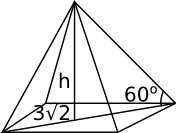
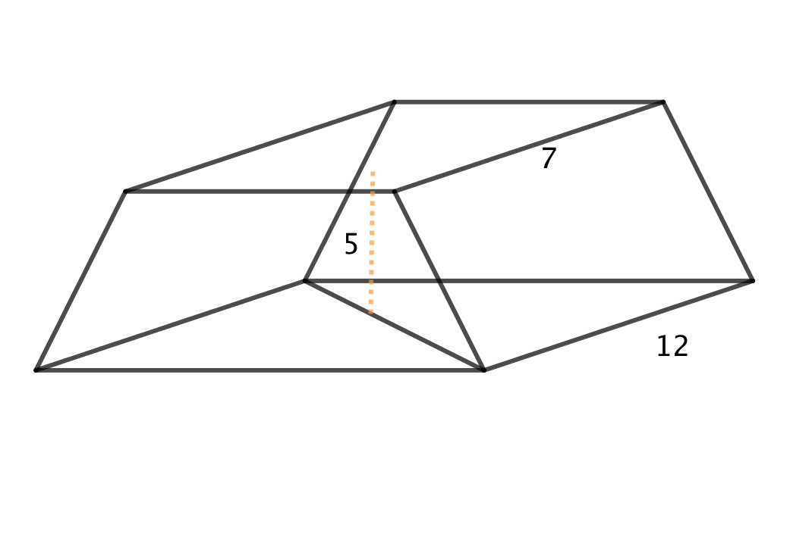

16. Pyramiden
En exakt härledning över pyramidens volym kommer i integralkalkylen, kurs 9. Här tar vi och motiverar den med hjälp av volymen för en kub.

Motivering
Vi betecknar volymen för pyramiden med \( V_p \) och volymen för kuben med \( V_k \). Vidare betecknar i längden för kuben med \( 2a \).
\( \begin{array}{rl} V_p = & \dfrac{1}{6}V_k \\ \\ = & \dfrac{1}{6}(2a)^3 \\ \\ = & \dfrac{8}{6}a^3 \\ \\ = & \dfrac{4}{3} a^3.\\ \\ A_b = & (2a)^2=4a^2.\\ \\ \textrm{Alltså } & \dfrac{1}{3}\cdot 4a^2\cdot a. \\ \end{array} \)
Detta skriver vi som \( \dfrac{1}{3}A_bh \).
Exempel 1 För en pyramid vars botten är en kvadrat vet vi att diagonalen över bottenarean är \( 3\sqrt{2} \) lång och att vinkeln mellan bottenarean och kanten mot toppen är 60o. Bestäm volymen för pyramiden.
Lösning
Vi har följande situation

Då vi ser uppifrån får vi kanten för pyramiden via Pythagoras.

\( \begin{array}{rl} a^2 + a^2 = & (3\sqrt{2})^2 \\ 2a^2 = & 3^2 \cdot 2 \\ a= & 3\\ \end{array} \)

och så utnyttjar vi trigonometri för att få höjden.
\( \begin{array}{rl} \tan 60^{\circ} = & \dfrac{h}{\dfrac{3}{\sqrt{2}}} \\ \\ h = & \dfrac{3}{\sqrt{2}}\tan60^{\circ} \\ \\ h= & \dfrac{3\sqrt{6}}{2}\\ \end{array} \)
Och volymen får vi som \( V=\dfrac{1}{3}A_b\cdot h = \dfrac{1}{3}\cdot 3^2 \cdot \dfrac{3\sqrt{6}}{2} = \dfrac{9\sqrt{6}}{2} \).
Uppgifter
- När Khufus pyramid byggdes var den 147 meter hög (i dagens läge är den 139 m hög) och längden på dess kvadratiska bas är 230 m. Man räknar med att Pyramiden byggdes under 20 år. Hur många m3 sten per vecka gick det åt om vi räknar med att volymen ökade hela tiden lika mycket?
Den totala volymen är \( V= \dfrac{1}{3}A\cdot b = \dfrac{1}{3}\cdot 230^2 \cdot 147 = 2592100 \) m3.
Under 20 år har vi \( 20\cdot 52 = 1040 \) veckor.
Det betyder \( \dfrac{2592100}{1040} = 2492,40 \) m3 per vecka. Alltså 2500 m3 per vecka.
- Taket på ett torn har formen av en kvadratisk pyramid. Höjden för taket är 5,0 m och längden för bottensidan är 4,0 m. Bestäm totala arean och volymen för taket.
Tvärsnittet av taket utgör en likbent triangel med höjden 5,0 och sidan 4,0. För att få längden använder vi oss av Pythagoras. De likbenta sidorna är \( \sqrt{2^2+5^2} = \sqrt{29} \) m lång.
Den totala arean består av 4 st trianglar med basen 4,0 m och höjden \( \sqrt{29} \) m. Den totala arean är \( 4 \cdot \dfrac{1}{2} \cdot 4 \cdot \sqrt{29} = 43,08\ldots \) m2.
Volymen är \( \dfrac{1}{3} Ah = \dfrac{1}{3} \cdot 4^2 \cdot 5 = 26,66\ldots \) m^3.
Alltså 43,1 m2 och 26,7 m3.
- En regelbunden kvadratisk pyramid som är lika hög som bred har volymen 9,0 dm3. Bestäm längden för sidan och höjden samt vinkeln mellan sidokanten och bottenytans diagonal.
Eftersom \( V=\dfrac{1}{3} Ah \) och bottenytans sidor är lika långa som höjden får vi ekvationen \( V=\dfrac{1}{3}s^3 \).
Alltså \( 9 = \dfrac{1}{3}s^3 \Leftrightarrow s=3 \).
Genom att studera tvärsnittet för pyramiden får vi diagonalen till \( 3\sqrt{2} \) (försäkra dig om detta), hälften av det är \( \dfrac{3\sqrt{2}}{2} = \dfrac{3}{\sqrt{2}} \). Höjden är 3.
Vi får att vinkeln mellan sidokanten och bottenytans diagonal till \( \tan \alpha = \dfrac{3}{\dfrac{3}{\sqrt{2}}}, \Leftrightarrow \alpha = 54,735\ldots \).
Alltså 54,7o.
- Från en regelbunden kvadratisk pyramid vars bottensida är 12 cm har man tagit bort toppen. Höjden för det som är kvar är 5,0 cm och bottensidan för det som man tog bort är 7 cm. Hur hög var pyramiden ursprungligen och bestäm volymen för den kropp som är kvar.
Vi arbetar med tvärsnitt.

Diagonalerna för kvadraterna är \( 7\sqrt{2} \) och \( 12\sqrt{2} \).
Då vi bildar ett tvärsnitt med diagonalerna får vi att

Vi får förhållandet \( \dfrac{x}{\dfrac{7\sqrt{2}}{2}} = \dfrac{5+x}{\dfrac{12\sqrt{2}}{2}} \).
Då vi löser ekvationen får vi \( x=7 \). Alltså är ursprungliga höjden 12 cm.
Den sökta volymen får vi då vi subtraherar den ena volymen från den andra.
\( V = V_{\text{stor}} - V_{\text{liten}} = \dfrac{1}{3} A_{\text{stor}}\cdot h_{\text{stor}} - \dfrac{1}{3} A_{\text{liten}}\cdot h_{\text{liten}} = \)
\( \dfrac{1}{3}(A_{\text{stor}}\cdot h_{\text{stor}} - A_{\text{liten}}\cdot h_{\text{liten}}) = \dfrac{1}{3}(12^2 \cdot 12 - 7^2 \cdot 7) = 461,66\ldots \) cm3.
Alltså 460 cm3.
- Största möjliga kub skrivs in i en regelbunden kvadratisk pyramid. Hur många procent utgör höjden av kuben av pyramidens höjd? Svara med en tiondel procents noggrannhet.
Hur placerar du in kuben så att den blir så stor som möjligt?
Sidan \( s \) i kuben \( \dfrac{a\sqrt{2}}{3} \), där \( a \) är sidan i pyramiden.
\( \dfrac{24}{27} = 0,888\ldots \).
- En Platonisk kropp är en figur vars alla sidoytor består av regelbundna månghörningar. Bestäm volymen och den totala arean för en kropp som består av liksidiga trianglar, tetraeder.
Mera om Platoniska kroppar kan du läsa på Wikipeida.
Area \( a^2\sqrt{3} \), volym \( \dfrac{a^3\sqrt{2}}{12} \).
- En geometrisk figur bildas så att mittpunkterna på en kubs sidor sammanbinds.
- Vilken geometrisk figur får vi?
Två pyramider.
- Hur många procent utgör den bildade kroppen av kubens volym?
Då sidan i kuben har längden \( a \) är sidan i pyramiden \( \sqrt{2}\cdot \dfrac{a}{2} = \dfrac{a}{\sqrt{2}} \).
Volymen för en pyramid är \( V=\dfrac{1}{3}(\dfrac{a}{\sqrt{2}})^2 \cdot \dfrac{a}{2} = \dfrac{a^3}{12} \).
Pyramidernas procentuella andel är \( \dfrac{2\cdot \dfrac{a^3}{12}}{a^3} = \dfrac{1}{6} = 0,1666\ldots = 16,7 \% \).
- Vilken geometrisk figur får vi?